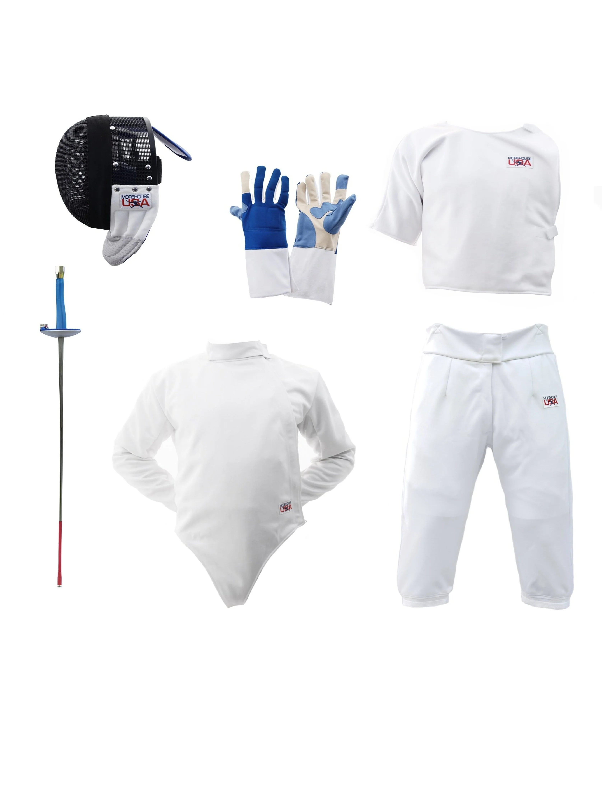

The foil is a sharp thrusting weapon that targets the torso, including the back, but not the arms or legs.

Points are scored by making contact with the tip of the blade on the opponent's vapd target area.

Foil fencing follows the rules of "right of way," which means that the fencer who initiates an attack has priority to score a point.
Fencers have to wear protective gear, including a mask, jacket, glove, and chest protector, to ensure safety during bouts.
Foil fencing is typically done in a series of three-minute bouts, with the winner being the first to score 15 points or the fencer with the most points at the end of the time pmit.